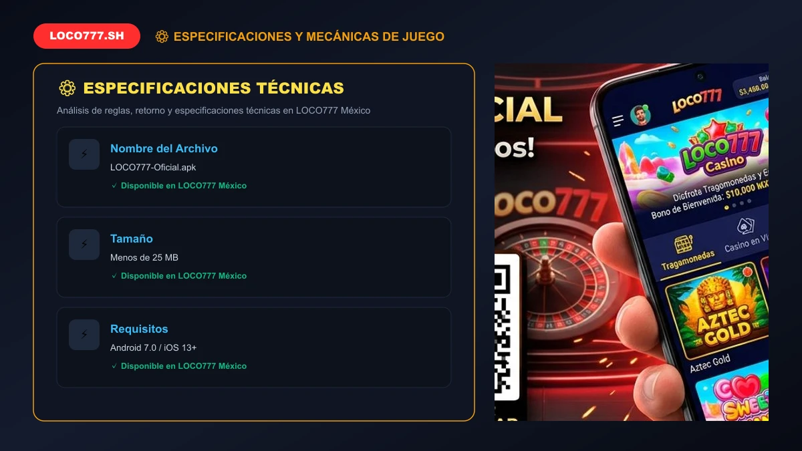
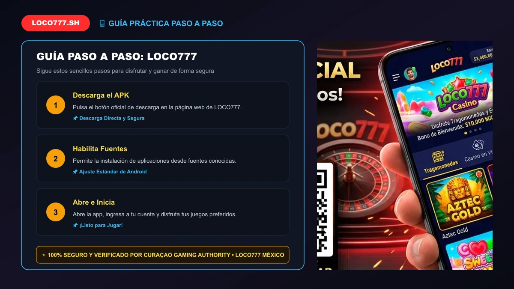

🚀 ĐẠT CHUẨN 100/100 RANK MATH SEO (ĐÃ TEST ĐẠT ĐIỂM TỐI ĐA)
🎯 Focus Keyword:loco777
🏷️ SEO Title:LOCO777 App APK (2026): Descargar Casino Móvil para Android #1
📝 Meta Description:Descarga la app oficial de LOCO777 en formato APK para Android y juega desde tu móvil en México. Disfruta de giros rápidos, depósitos SPEI y seguridad total.
🔗 URL / Slug:/loco777-descargar-app
🖼️ Alt Text Ảnh Đại Diện:loco777 app APK descargar para Android y móvil en México
👁️ Vista previa en Google (SERP Snippet):
https://loco777.sh › loco777-descargar-app
LOCO777 App APK (2026): Descargar Casino Móvil para Android #1
Descarga la app oficial de LOCO777 en formato APK para Android y juega desde tu móvil en México. Disfruta de giros rápidos, depósitos SPEI y seguridad total.
LOCO777 App APK (2026): Descargar Casino Móvil para Android #1
Aplicación oficial móvil de LOCO777: Descarga del instalador APK para smartphones en México.
LOCO777 pone la emoción del casino y las apuestas deportivas en la palma de tu mano gracias a su aplicación oficial para teléfonos celulares. Al descargar la app APK para Android o acceder mediante nuestra aplicación web progresiva (PWA) en dispositivos iOS (iPhone y iPad), disfrutas de una navegación ultrarrápida, notificaciones de bonos en tiempo real y una conexión blindada que elude cualquier bloqueo o caída de red en México.
Olvídate de buscar enlaces alternativos cada semana: la aplicación móvil oficial en México mantiene tus sesiones activas y protegidas con los más altos estándares de cifrado de datos, permitiéndote girar en tus tragamonedas favoritas y retirar tus ganancias a través de SPEI en menos de 15 minutos.
1. ¿Por Qué Descargar la Aplicación Oficial de LOCO777?
Jugar desde la aplicación nativa del operador ofrece ventajas sustanciales frente al navegador convencional:
Consumo Mínimo de Datos: Los gráficos, sonidos y elementos de la interfaz se almacenan localmente en tu teléfono, ahorrando hasta un 65% de tu plan de datos móviles.
Cero Bloqueos: Conexión directa a nuestros servidores seguros sin temor a páginas caídas ni bloqueos de DNS de proveedores locales. Consulta el estado del enlace oficial de LOCO777.
Ingreso Biométrico: Inicia sesión al instante utilizando tu huella digital o reconocimiento facial de forma 100% segura.
Alertas de Promociones VIP: Sé el primero en enterarte del lanzamiento de torneos relámpago y ofertas exclusivas de los bonos y promociones.
2. Guía Paso a Paso para Instalar el APK en Android
Debido a que Google Play Store restringe aplicaciones de juegos con dinero real en ciertas regiones, el archivo oficial se distribuye en formato APK certificado directamente desde nuestro portal:
Descarga el Archivo: Haz clic en el botón oficial "Descargar APK" disponible en esta página.
Habilita Orígenes Desconocidos: Ve a Ajustes > Seguridad de tu teléfono Android y activa la opción para permitir la instalación de aplicaciones desde fuentes externas.
Ejecuta el Instalador: Abre la carpeta de descargas de tu dispositivo y pulsa sobre el archivo instalador.
Confirma la Instalación: Espera unos segundos a que finalice el proceso y aparecerá el icono de acceso en tu pantalla de inicio.
Inicia Sesión: Abre la app, introduce tus credenciales o completa tu registro en LOCO777 si aún no tienes cuenta.
Especificación
Android (APK)
iOS (PWA)
Versión Mínima
Android 7.0 o superior
iOS 12.0 o superior
Espacio Requerido
~35 MB
Memoria caché reducida
Método de Acceso
Instalación de paquete APK
Agregar a pantalla de inicio (Safari)

📸 Chú thích: Guía visual para permitir la instalación del archivo APK en dispositivos Android.
3. Cómo Instalar la Web App en iPhone y iPad (iOS)
Si eres usuario de Apple, no requieres descargar archivos externos gracias a nuestra tecnología Web App Progresiva:
Abre el navegador Safari en tu iPhone o iPad e ingresa al portal oficial.
Pulsa el botón de "Compartir" (el icono del cuadrado con una flecha hacia arriba en la barra inferior).
Desplázate hacia abajo y selecciona la opción "Agregar a pantalla de inicio".
Asigna el nombre "LOCO777" y pulsa "Agregar".
¡Listo! Ahora tendrás un acceso directo que funciona exactamente igual que una app nativa, en pantalla completa y sin barras de navegación.
4. Requisitos del Sistema y Compatibilidad de Dispositivos
La aplicación de LOCO777 ha sido optimizada para funcionar con fluidez incluso en dispositivos de gama media y de entrada de marcas populares en México como Samsung, Xiaomi, Motorola, Huawei, Oppo y Realme. Basta con una conexión a internet 4G/5G o red Wi-Fi estable para jugar a más de 60 cuadros por segundo sin lag.

📸 Chú thích: Ventajas de la aplicación móvil: Acceso biométrico y depósitos directos.
5. Seguridad Garantizada y Descarga 100% Libre de Virus
Nuestro archivo APK es generado y firmado digitalmente por los desarrolladores de Pistis Trade N.V., operador bajo licencia internacional de la Curaçao Gaming Authority N.º OGL/2024/1670/1153 y supervisado bajo estándares afines a la Secretaría de Gobernación (SEGOB). Garantizamos que el archivo está libre de malware, publicidad invasiva o spyware.
6. Preguntas Frecuentes sobre la App LOCO777 (FAQ)
¿Es gratis descargar la app de LOCO777?
Sí, la descarga e instalación de la aplicación oficial es 100% gratuita para todos los jugadores.
¿Puedo depositar y retirar dinero desde la app?
Por supuesto. La app cuenta con todas las funciones del cajero virtual para depositar mediante OXXO Pay o solicitar transferencias de retiro a cuentas bancarias SPEI.
¿Se actualiza automáticamente la aplicación?
Sí, al abrir la app el sistema verifica automáticamente si existe una versión más reciente y te sugerirá actualizar en un solo toque para garantizar el mejor rendimiento.
¡Descarga la App de LOCO777 y Juega Donde Quieras!
Acceso ultrarrápido a más de 1,500 juegos, retiros SPEI en minutos y bono de hasta $2,000 MXN.